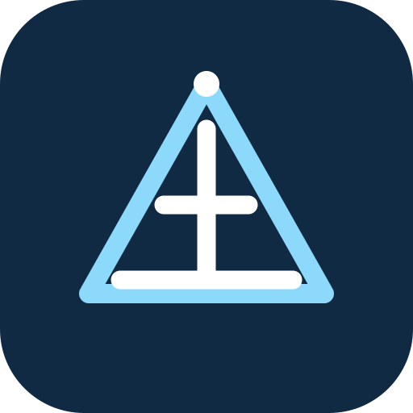

Foundation for quick access to starred tools and references.

PWD Tools
Field Engineering Assistant
‹
JE Profile
JE
Junior Engineer
Junior Engineer · Public Works Department
Office / Subdivision not set
Downloaded books/drawings will appear here when private library integration is connected.
Your recent tools stay on this device.
Pin frequently used field functions for one-tap access.
PWD Tools · Field Engineering Assistant · UI V3 implementation.
Profile details are optional and stored locally in this public PWA. They are not part of official PWD records.